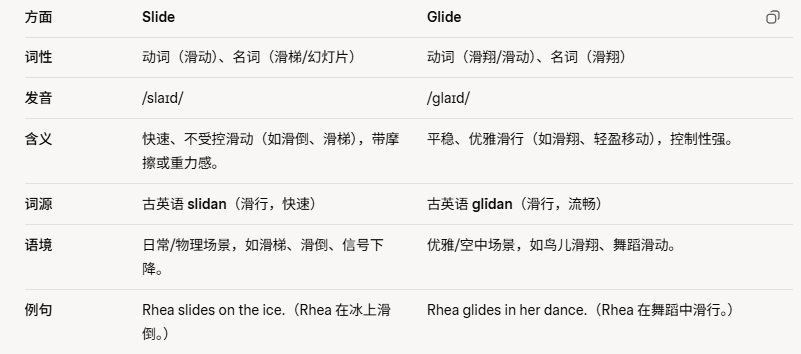

共 50 个词条 · 1 张附图（含音标截图）
detrimental /ˌdet.rɪˈmen.təl/ adj.不利的;有害的
The dumping of plastic in the oceans has a detrimental effect on marine life. 向海洋中倾倒塑料会对海洋生物产生有害影响。
the sun's detrimental effect on skin 日光对皮肤的有害影响
damaging adj.有危害的
beneficial adj.有益的，有好处的
the detrimental effects of noise in classroom situations噪声对课堂的不利影响
induce v.诱导;引起;劝说
The wonderful natural beauty of the area induces many travellers to go there.这个地区美丽的自然风光吸引了很多旅行者。
induce me to take the job 劝我接受这份工作
drugs which induce sleep 使人昏昏欲睡的药物
draft n.草稿，草案v 起草，草拟
He carefully revised(修订；修正；修改) his first draft, making necessary corrections and improvements他仔细修改了初稿，做了必要的修改和完善。
a rough（高低不平的；崎岖的；难行的，（表面）粗糙的，毛糙的，不平滑的，（土地）未开垦的，杂草丛生的，荒的） draft of the letter 这封信的草稿
draft your proposal 起草建议书
telescope n.望远镜
He peered (仔细看，端详; 费力地看，同龄人; 同辈; 同等社会地位（或能力）的人，贵族) through the telescope to observe the stars in the night sky. 他透过望远镜观察夜空中的星星
look at the stars through a telescope 用望远镜观察星星
microscope n.显微镜
dismal /ˈdɪz.məl/ adj.忧郁的，阴沉的; 糟糕的，悲伤绝望的
The dark and rainy weather created a dismal and depressing（使忧郁，使沮丧） atmosphere. 阴暗多雨的天气营造出一种阴沉压抑的气氛。
their dismal record in the Olympics 他们在奥运会上的惨淡纪录
coordinate v. /kəʊˈɔː.dɪ.neɪt/使协调;使相配合 n. /kəʊˈɔː.dɪ.nət/ 坐标
ordin=顺序，co=一起，ate动词，把顺序弄到一起，就是协调
It's sometimes quite difficult to coordinate a large group of people on a company excursion(/ɪkˈskɜː.ʃən/（常指结伴同行的）远足，短途旅行).有时协调很多人参加公司远足活动是很困难的。
coordinate the work of the team 协调这个团队的工作
coordination n.协调
steer v.驾驶，掌舵;操控，引导
She steered the boat slowly towards the busy port.她驾驶着船缓慢地驶向繁忙的港口。
steer a course between the island 在岛屿之间穿行
And satellite operators can't steer away from every potential crash, because each move consumes time and fuel that could otherwise be used for the spacecraft's main job.人造卫星的操控者无法操纵卫星躲闪开每一次潜在的撞击，因为每一次移动都要消耗时间和燃料，而这些原本都是要用在这架飞行器的主要工作上的。
seek v.寻求;寻找
They reached the top of the mountain after a very long hike and started to seek shelter(掩蔽（处）;遮蔽（处），躲避；保护；遮蔽；为…提供避难的地方；合法避税) from the bitter(极为不满的；怨恨的；无法释怀的，使人痛苦的；令人愤怒的，充满仇恨的；愤怒的；激烈的，苦的，有苦味的，（天气）严寒的，刺骨的) winds.经过长途跋涉，他们到达了山顶，开始寻找避风的地方。
seek funding for a project 为项目筹募资金
search for 搜索
bounce /baʊns/ v.弹起，反弹n.弹跳;弹性，弹力
The children loved bouncing on the trampoline(/ˈtræm.pəl.iːn/蹦床) in the backyard.孩子们喜欢在后院的蹦床上蹦蹦跳跳。
bounce the ball against the wall 对着墙打球
decay v.n.衰退;腐烂
Without proper care, fruits and vegetables will quickly decay and become inedible（/ɪˈned.ə.bəl/不可食用的，不适合食用的）缺少适当的护理，水果和蔬菜会很快腐烂，变得不可食用
tooth decay 蛀牙
the decay of the old industries旧工业的衰败
In the wild, when plants grow they remove nutrients （/ˈnjuː.tri.ənt/养分;营养物，滋养物）from the soil, but then when the plants die and decay these nutrients are returned directly to the soil.自然环境下，植物生长时会带走土壤中的营养物质，但随着植物衰退腐烂，这些营养物质会直接返还到土壤中。
reverse v.反转，倒转；改变 adj.相反的
It would be a struggle(/ˈstrʌɡ.əl/奋斗，努力，拼搏，打斗，争斗;（尤指）扭打，斗争，抗争) to reverse the damage caused by the failure of the project.扭转项目失败所造成的损害将是非常困难的。
reverse the order将顺序颠倒
revert v.倒转;还原
reversible adj可逆转的，可倒转的
irreversible （/ˌɪr.ɪˈvɜː.sə.bəl/）adj.不可逆转的，不可扭转的
reverse the traffic growth trend 扭转交通增长的趋势
lobe /ləʊb/ n.(脑、肺等的)叶
There have been extensive scientific studies into how the brain's frontal lobe affects intelligence and decision-making.关于大脑额叶如何影响智力和决策，已经有了非常广泛的科学研究。
damage to the temporal lobe of the brain 对大脑颞叶的损伤
frontal (前面的;前部的)lobe 大脑额叶 老师说这个出现的最多
temporal (世间的，世俗的，现世的，太阳穴的;颞（niè）骨的，)lobe 大脑颞叶
occipital（/ɒkˈsɪp.ɪ.təl/枕部的） lobe 大脑枕叶
parietal（/pəˈraɪ.ə.təl/（顶骨，身体部分）外壁的;腔壁的） lobe 大脑顶叶
indigenous /ɪnˈdɪdʒ.ɪ.nəs/ adj.本土的，当地的
The indigenous people have lived in harmony (和谐和睦和平)with nature for centuries, respecting their ancestral lands.几个世纪以来，当地人与自然和谐相处，尊重他们祖先的土地。
the indigenous languages of the area 该地区的本地语言
A team made up of more than 30 psychological scientists anthropologists（/ˌæn.θrəˈpɒl.ə.dʒɪst/人类学家）, and biologists then played these recordings to listeners from 24 diverse societies, from indigenous tribes in New Guinea to city-dwellers（居民） in India and Europe.由30多位心理科学家、人类学家和生物学家组成的团队继而将这些录音播放给了来自24个不同社会——从新几内亚的原住民部落到印度和欧洲的城市居民的听众。
scheme /skiːm/ n.计划，方案;阴谋v.密谋，策划——相当于plan
The new employment scheme for graduates helps to find internships in companies related to their studies. 新的就业计划帮助毕业生在与其专业相关的公司寻求实习机会
a training scheme 培训方案
sequence /ˈsiː.kwəns/ n.顺序;一系列 v. 按顺序排列
It's important that your essay outline follows a clear and logical sequence. 你的文章大纲遵循清晰有逻辑的顺序是很重要的。
in a particular sequence 按照一定次序
template n.模板;样板
In our DNA we all carry a genetic (/dʒəˈnet.ɪk/基因的;遗传信息的)template for the next generation.在我们的DNA中，我们都携带着给下一代的基因模板。
provide a template 提供模板
Reliance on a template like this offers the huge advantage of built-in consistency.依托于这样的一个模板能够产生内部一致的明显优势。
archive /ˈɑː.kaɪv/ n.档案馆;档案文件 v. 存档
The archive offers a central facility for categorising(/ˈkæt.ə.ɡər.aɪz/对…进行分类，将…归类) and organising data.档案馆提供了对数据进行分类和组织的服务中心。
archive material档案资料
edible /ed.ə.bəl/adj. 可食用的 这个词ed=eat
Some mushrooms are edible and others are inedible and poisonous to humans.有些蘑菇是可食用的，有些蘑菇是不可食用、对人类有毒的。
edible fungi 可食用的菌类
inedible adj.不可食用的
tram n.有轨电车;煤车，矿车
The tram smoothly glided (滑行，滑动)along the tracks, transporting passengers through the city streets.有轨电车平稳地沿着轨道行驶，载着乘客穿过城市街道。
a tram route 有轨电车路线，route在交通场景下代表路线
This begins with a leisurely ride along the promenade(/ˌprɒm.əˈnɑːd/散步场所;（尤指）海滨散步道) in Douglas in a horse-drawn tram.当天早上，我们可以沿着道格拉斯的散步长廊乘坐马拉车，打发一段悠闲的时光。

remuneration /rɪˌmjuː.nərˈeɪ.ʃən/ n.薪水，报酬
He received a generous(/ˈdʒen.ər.əs/慷慨的，大方的;宽宏大量的，仁慈的, 大的；大量的；丰富的) remuneration for his hard work and dedication (奉献，贡献;献身,献词;致谢词，他的动词是dedicate，注意和dedicated区分)to the company.由于辛勤工作和对公司的奉献，他得到了丰厚的报酬。
a generous remuneration 一份很不错的薪水
Problems of recruitment(/rɪˈkruːt.mənt/招聘，吸收), remuneration and independence could also arise and this structure would not be appropriate for all companies招聘、薪酬和独立性等问题也可能出现，并且这种结构不会适用于所有公司。
delicate adj 脆弱的；娇嫩的 ，需要小心处理的
dedicate vt. 奉献，献出（全部精力、时间等），（把书籍、戏剧、演出等）献给；为（尤指宗教建筑）举行奉献典礼;为…举行落成仪式
dedicated adj. 尽心尽力的，尽职尽责的，专用的，专门的
dismantle /dɪˈsmæn.təl/ v.拆除;取消;解散
It was quite easy to assemble the piece of furniture, but dismantling it was tough.组装那件家具很容易，但拆卸起来却很困难
dismantle the engine in order to repair it 把发动机拆开来修理
empirical /ɪmˈpɪr.ɪ.kəl/ adj.实验为依据的;经验主义的
The scientist conducted(组织；实施；进行；处理，) extensive experiments to gather empirical evidence for her research这位科学家进行了大量实验，为她的研究收集实证证据。
empirical research 基于实验的研究
limited empirical evidence 有限的实验数据
reclaim v.收回，取回;利用，改造
The tax is quite high in Sweden, but at the end of the financial year you can reclaim a certain percentage from the bureau(/ˈbjʊə.rəʊ/，办事处，办公室，机构，（政府部门的）局，处，科，书桌，五斗橱;（有抽屉的）衣柜，衣橱).
瑞典的税收相当高，但在财政年结束时，你可以从财政部门收回一定的比例。
reclaimed marshland（/ˈmɑːʃ.lænd/沼泽地） 被开发的沼泽地
the Federal Bureau of Investigation联邦调查局
junction n.连接;交叉点;连接点
When you get to the next junction, don't take the first left, but take the second left to the north onto the expressway当你到达下一个路口时，不要在第一个路口左转，而是在第二个路口左转，向北进入高速公路。
a telephone junction box 电话分线盒
ultimate adj.最终的;极限的;根本的 约等于final
Although they are allowed to give their opinions, the ultimate decision lies with their manager.尽管他们可以发表自己的意见，但最终决定权在经理手中。
our ultimate target 我们的最终目标
the ultimate goal 最终目标
pedestrian /pəˈdes.tri.ən/ n.行人 adj.行人的
The pedestrian street near my office is a pleasant place for a quiet stroll(/strəʊl/散步，溜达) during lunch hour.我办公室附近的步行街是午餐时间安静散步的好地方。
pedestrian areas 步行区
pedestrian crossing 人行横道
enrich v.使充实;使富裕;使(土壤)肥沃
Farmers often add fertiliser to enrich the soil so crops grow better.农民们经常施肥使土壤肥沃，以便让作物更好地生长。
enrich all our lives 丰富我们的整个生活
feat n.功绩，壮举;武艺，技艺
Climbing Mount Qomolangma is considered a remarkable（非凡的；奇异的；引人注目的） feat of human endurance（/ɪnˈdʒʊə.rəns/忍耐力，耐受力）攀登珠穆朗玛峰被认为是人类耐力的非凡壮举。
a brilliant(/ˈbrɪl.jənt/颇有才气的，聪颖的;技艺高超的，光明的，明亮的;（颜色）鲜艳的，非常好的，出色的) feat of engineering 工程领域的光辉业绩
disorder n.混乱;骚乱，动乱;紊乱，疾病
When the teacher was away the class fell into total disorder as the children misbehaved.由于孩子们的调皮行为，老师不在的时候，班里陷入了完全的混乱。
mental disorder 心理问题;精神错乱
psychiatric disorder 精神疾病
This makes it too common to be considered a mental disorder这使它过于普通，以至于不会被当作一种心理问题
submit /səbˈmɪt/ v.提交;主张;屈服，投降
I am in a real hurry this week because I have three assignments to submit to the tutor and I’m still a little behind on them.我这周真的很忙，因为我需要提交三个作业给导师，而且我目前还没有完成。
submit an application 提交申请书
advocate v. /ˈæd.və.keɪt/提倡，主张 n. /ˈæd.və.kət/提倡者; 支持者，辩护律师
Some famous people are advocates of environmental causes（原则，事业，目标） like wildlife preservation.一些有名的人是野生动物保护等环境事业的倡导者
advocate rewarding your child for good behaviour主张对孩子的优异表现加以奖励
support v.支持
oppose v.反对
patronage /ˈpæt.rə.nɪdʒ/ /ˈpeɪ.trən.ɪdʒ/ n.赞助，资助
The artist was grateful for the generous patronage of art enthusiasts(/ɪnˈθjuː.zi.æst热衷于…的人;热心者;爱好者)这位艺术家很感激艺术爱好者的慷慨赞助。
government patronage of the arts 政府对艺术的资助
sophisticated /səˈfɪs.tɪ.keɪ.tɪd/ adj.复杂的;精致的
She had quite sophisticated taste in fine French foods and classical music.她对精致的法国餐食和古典音乐有相当的鉴赏力。
the sophisticated pleasures of city life 城市生活中各式各样的快乐
Shipbuilding today is based on science and ships are built using computers and sophisticated tools.科学技术是现代造船业的基础，人们会使用电脑科技以及多种复杂的工具来建造船只。
roam v.漫步，闲逛
They loved to roam freely in the vast wilderness, exploring nature's wonders. 他们喜欢在广阔的荒野中自由漫步，探索大自然奇观。
roam the countryside 在乡间漫步
roam around the whole area 在整个地区漫游
expenditure /ɪkˈspen.dɪ.tʃər/ n.支出，花费;经费
She was happy about the idea of going to university in New Zealand, although the expenditure was a huge burden(/ˈbɜː.dən/负荷，重负，缩影) on her family. 去新西兰读书的计划令她非常开心，尽管这份支出对其家庭而言是很大的负担。
a reduction (减少；减小；降低；缩小) in public expenditure 削减公共开支
plans to increase expenditure on health care增加医疗保健开支的计划
restore v.恢复;修复;还原 相当于recover
Construction teams worked to restore the damage caused by the hurricane.施工队努力修复飓风造成的破坏。
restore public confidence in the economy 恢复公众对经济的信心
restore the stepwells throughout the state 修复全州的阶梯井
witness n.证人;目击者v.目击，见证
He witnessed the signing of the will in the lawyer's office他在律师事务所见证了遗嘱的签署。
a defence witness 被告的证人
a prosecution(/ˌprɒs.ɪˈkjuː.ʃən/(被）起诉;（被）检举;诉讼, 控方律师，原告律师) witness 控方的证人
stubborn /ˈstʌb.ən/ adj.固执的
However much his mother pushed him, the stubborn child refused to eat his vegetables不管妈妈怎么催他，这个倔强的孩子都不肯吃蔬菜。
a stubborn resistance（抵抗;反抗;反对，阻力，电阻） to change 顽固抵制变革
facility n.设施，设备;才能
The new medical facility is dedicated to infectious disease research.新的医疗设施专门用于传染病研究。
conference facilities 会议设施
format n.格式;版式v. 使格式化
The format of the new magazine is very attractive; it's clear it was done by a professional designer.新杂志的样式很吸引人，很明显这是由专业设计师设计的。
the format of the quiz 测验的形式
the typical format of a maths lesson 一堂数学课的典型结构
endure /ɪnˈdʒʊər/ v.忍受，忍耐;持久，持续
Despite（不管;尽管;无论） the challenges, she continued to endure and persevere（/ˌpɜː.sɪˈvɪər/锲而不舍，坚持不懈） with determination.尽管面临种种挑战，她仍然坚定地继续坚持。
have to endure a long wait 需要忍受长久的等待
endurance n.忍耐力;耐久性
manoeuvre /məˈnuː.vər/ v.操控;移动 n.策略，手段
The traffic jam was so bad, so he had to manoeuvre the car turn around and head back down the highway and find another route to the airport. 交通堵塞太严重了，他只好驾驶车辆掉头沿着高速公路开回去另找一条路去机场。
manoeuvre the car carefully into the garage 小心地将车开进车库
bilateral /ˌbaɪˈlæt.ər.əl/ adj.双边的;两边的
The two countries are currently working on a bilateral agreement to recognize each other's vaccines（/ˈvæk.siːn/）两国目前正在协商一项双边协议，以互认彼此的疫苗。
bilateral relations 双边关系
bilateral agreements 双边协议
enhance uk:/ɪnˈhɑːns/ us: /ɪnˈhæns/ v.提高;加强;增加
He believes that good lighting will enhance the atmosphere(/ˈæt.mə.sfɪər/大气，大气层，大气圈，氛围；情调，情趣，气氛；环境) of the room.他相信好的照明会改善房间的氛围
an opportunity to enhance the reputation of the company提高公司声誉的机会
enhancement n.增强:增加
enhance employee motivation and retention（/rɪˈten.ʃən/保留;保持;维持）提升员工积极性和员工保留率
sediment n.沉积;沉淀物 注意，这个既可以可数名词也可以不可数
When the water level went down in summer you could see the muddy brown sediment at the bottom of the canal（/kəˈnæl/运河;渠）.当夏季水位下降时，你可以在运河底部看到泥泞的色沉积物。
ocean sediments 海洋沉积物
shrink /ʃrɪŋk/ v收缩;缩小
If you put a cashmere(/ˈkæʃ.mɪər/开司米；（山）羊绒) sweater(/ˈswet.ər/针织套衫，毛线衫) in the washing machine on a high temperature, it will shrink.如果你把羊绒毛衣放在洗衣机里高温洗涤，它就会缩水
shrank in the wash 缩水了
shrink the world 使世界变小
condense /kənˈdens/ v.压缩;精简
perfume n.香水;香味v. 散发香气
don't really like strong-smelling perfume—— I prefer the more subtle （/ˈsʌt.əl/隐约的;暗淡的;不易察觉的，不明显的;微妙的，细微的；细致的，微妙的，精妙的;巧妙的）fragrances（/ˈfreɪ.ɡrəns/芳香，香气，香水） 我不太喜欢味道浓的香水，我更喜欢淡淡的香味。
a bottle of expensive perfume 一瓶昂贵的香水
stationary /ˈsteɪ.ʃən.ər.i/ adj.固定的;静止的
You should not get up from your seat until the train has come to a halt and is completely stationary在火车完全停稳之前，你不能从自己的座位上站起来。a stationary population 稳定的人口
a stationary exercise bike 固定式健身自行车
static adj.静止的
mobile adj.运动的
Stationery /ˈsteɪ.ʃən.ər.i/ 文具 和上面那个读音一样，如果是听力的话需要从上下文语境来判断到底是啥
encounter v.遭遇;遇到 后面一般跟不好的词
Many airline pilots claim to have encountered UFOs and other strange flying objects in the sky.许多飞行员都声称在空中遇到过不明飞行物以及其他奇怪的飞行物体。
encounter stress 面临压力
complain 抱怨
portfolio /ˌpɔːtˈfəʊ.li.əʊ/ n.公文包;作品集;投资组合
The investor carefully managed her diverse portfolio, aiming(目标，目的；意图，瞄准，对准，打算，计划;想要) for long-term growth and stability.投资者谨慎地管理着她的多元投资组合，目标是实现长期增长和稳定性。
an investment portfolio 投资组合